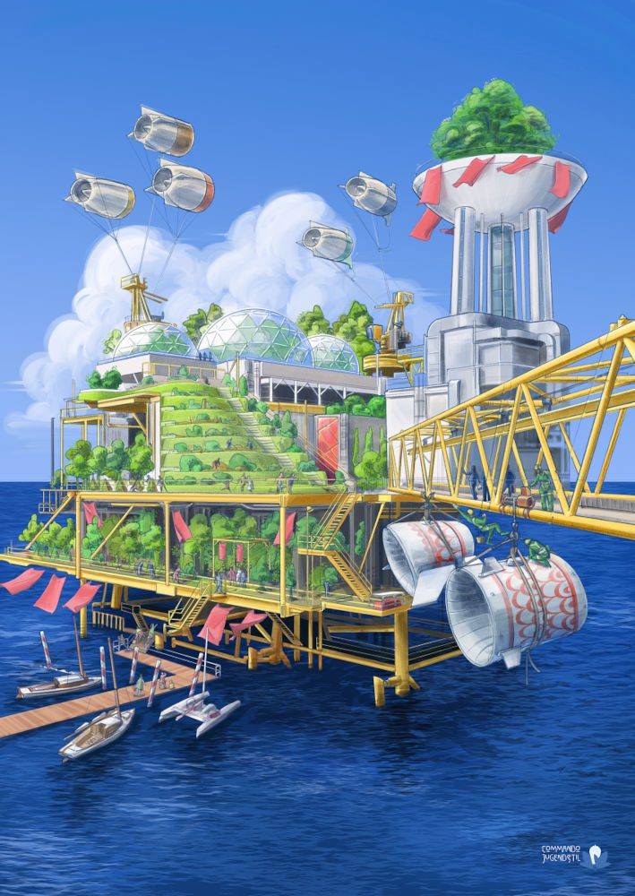

References / Illustration / 542
Solarpunk village on a former oil platform
An offshore oil platform rebuilt as a terraced garden village with geodesic greenhouses, kite turbines, and sailing boats at its jetty.
- Source
- alxd.org: “Nudne science fiction uratuje świat” (2022)
- Creator
- Commando Jugendstil
- Made
- Before November 2022 (Commons upload 2022-11-19; alxd.org says it was made “a few years earlier”)
- Style
- Solarpunk (agent-proposed, not yet reviewed by a person)
- Moods
- Hopeful, inventive, sunlit, verdant
- Evidence
- Downloaded and inspected the Commons copy (709 × 1000 px). It carries the Commando Jugendstil signature at lower right.
- Reviewed
- Rights
- Open license, stored. License: CC-BY-SA-3.0. Rights policy

Context
The Commons description reads: “An image of a former oil platform at sea, repurposed as a greenhouse and powered by wind turbines. It’s a representation of solarpunk values, repurposing infrastructure and getting rid of fossil fuels.” Commons file page.
The Polish blog post captions it “Solarpunkowa wioska na porzuconej platformie wiertniczej - CC-BY-SA 3.0 Commando Jugendstil” (a solarpunk village on an abandoned drilling platform). It says the collective made it to illustrate an unpublished article in the Swedish magazine LiberalDebatt, and that Gazeta Wyborcza later printed it with an interview about solarpunk. alxd.org.
The same post calls Commando Jugendstil one of the most active solarpunk art collectives in Europe, with murals, city-programme illustrations, and magazine covers.
Observed
- A yellow steel platform stands on legs in a deep blue sea, with a yellow lattice crane bridge running off to the right.
- Its decks hold rows of trees behind glass, a stepped green terrace with a stair, and three glazed geodesic domes on the top deck.
- Four tethered, ducted turbines fly above the platform like kites. Two more turbine shells, decorated with a red scale pattern, hang from the crane.
- A white tower at right is topped by a bowl of trees and red pennants. Red flags fly across the decks.
- Sailing boats and a trimaran are moored at a wooden jetty. Small figures work on stairs and walkways.
- Soft white cumulus clouds fill a clear blue sky. The rendering is a painted digital illustration with fine dark linework.
Why it belongs
The image is a direct answer to the style’s critics: it shows the fossil economy turned to gardens rather than a clean new city from nothing.
The domes and terraces supply the style’s greenhouse and arched-structure motif. The yellow steel and red pennants give the scheme a festive, maritime accent.
Borrow
Show an old industrial structure kept and reused, with new planting and energy added on top.
Use one strong structural colour (yellow steel) against sky blue and leaf green.
Measured
Machine-extracted by tools/image-traits.py on . Full measurement.
- Mean chroma
- 0.34
- Palette
- #4f89df 11%
- #1b4889 10%
- #23549e 8%
- #5e93e4 5%
- #397dd8 5%
- #719fe9 4%
- #153e7b 4%
- #a7b3c1 3%

